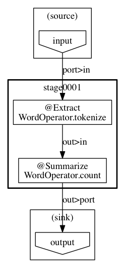

Wordcount example with Asakusa Framework
View the Project on GitHub nautilus-sekiguchi/asakusa-wordcount-example
Hadoop WordCount, Spark WordCount と同様のWord CountをAsakusa Frameworkで実装したものです。

入力データを DirectIO line で読み込み、 @Extract で単語に分解し、 @Summarize で集計しています。
演算子の単体テストと、ジョブフローのテストを実装しています。 テストの詳細については、 ユーザーガイド をご覧ください。
> ./gradlew assemble> cp -rp build/spark-batchapps/spark.wordcount $ASAKUSA_HOME/batchapps/target/testing/directio/inputtext に、Project Gutenbergの Alice in Wonderlandを同梱しています。HDFSに配置して、実行してください。